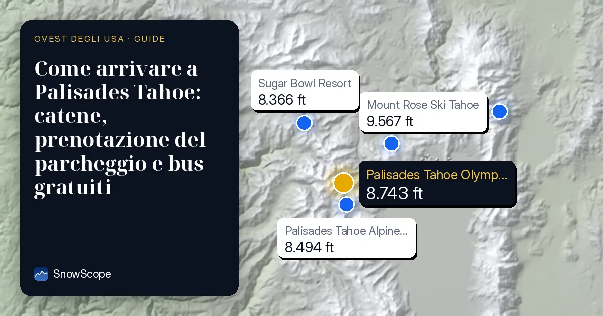
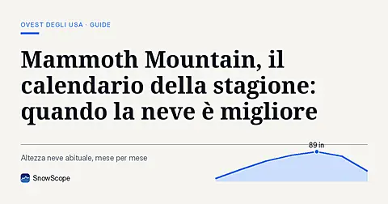

Come arrivare a Palisades Tahoe: catene, prenotazione del parcheggio e bus gratuiti
Palisades Tahoe Olympic Valley, sulla sponda nord-occidentale del lago Tahoe, attira sciatori da Reno, Sacramento e dalla Bay Area. Il tuo viaggio invernale dipende da due fattori: le regole californiane sulle catene da neve quando cade la neve, e le prenotazioni parcheggio richieste dalla stazione nei fine settimana affollati e durante le festività.
Le previsioni neve in tempo reale per Palisades Tahoe Olympic Valley nell'app SnowScopeAltezza neve, allerte powder e mappa 3D, gratis.

Tre ore dalla città dell'aeroporto più vicino
Reno è il gateway più vicino: circa 68 km a sud-ovest. Sacramento si trova a 154 km a ovest, e San Francisco a 315 km ancora più lontano. The Village at Palisades Tahoe si trova a 1960 Olympic Valley Road; la base di Alpine Meadows ha un accesso proprio su Alpine Meadows Road. La maggior parte degli automobilisti passa dal Donner Summit, dove il traffico invernale rallenta notevolmente nei giorni di tempesta.
Il tempo di guida da Reno è di solito circa tre ore in condizioni serene, ma la neve e i posti di controllo delle catene possono raddoppiare il tempo. Parti presto nel giorno previsto e controlla Caltrans QuickMap per lo stato della strada, le chiusure e le regole sulle catene prima di partire.

Cosa significano R-1, R-2 e R-3 quando cade la neve
Caltrans pubblica i livelli di controllo catene su cartelli lungo la strada quando inizia la neve. R-0 significa nessun controllo. R-1 richiede catene su tutti i veicoli eccetto le auto passeggeri e i furgoni leggeri sotto 2.722 kg con pneumatici da neve su almeno due ruote motrici; questi veicoli devono comunque portare le catene in macchina. R-2 significa catene o dispositivi di trazione su tutti i veicoli eccetto quelli con trazione integrale o integrale e pneumatici da neve su tutte e quattro le ruote, che devono avere i dispositivi nel veicolo. R-3 richiede catene su ogni veicolo, senza eccezioni; le strade spesso si chiudono prima che R-3 sia pubblicato.
I cartelli e il personale di Caltrans o CHP al posto di controllo hanno sempre l'ultima parola. I report radio possono rimanere indietro rispetto alle condizioni effettive. Nei giorni di forte nevicata, i camion sono fermati o respinti ai posti di controllo, il che ritarda tutto il traffico dietro di loro. Aggiungi tempo extra al tuo programma nei giorni di tempesta.
Prima di partire: controlli della strada e tempistica
Caltrans QuickMap è la fonte ufficiale per i controlli catene, le chiusure e le condizioni attuali su SR-80 e altri percorsi di montagna. Controlla prima di partire da casa, poi controlla di nuovo dalla strada se il viaggio richiede più tempo del previsto. Nei giorni affollati dopo neve fresca, le code ai posti di controllo possono estendersi per miglia, specialmente se la neve continua a cadere.
Parti presto: non per il comfort, ma per evitare di restare bloccato in una coda lenta o di affrontare una chiusura che ti lascia fermo per la notte. Se vedi R-2 o superiore già pubblicato, considera se la giornata vale la guida.
Parcheggio: prenota in anticipo o usa gli autobus gratuiti
Le prenotazioni parcheggio sono obbligatorie il sabato, domenica e durante tutti i periodi festivi. La stazione offre sia posti gratuiti che a pagamento, ma devi prenotare prima di arrivare. Nei fine settimana affollati senza prenotazione, non troverai un posto.
Esistono alternative gratuite. Tahoe Area Regional Transit (TART) gestisce autobus gratuiti ogni giorno da Truckee e Tahoe City verso Olympic Valley. The Mountaineer, una navetta gratuita su richiesta, collega diverse parti della valle. In un giorno di tempesta quando la guida è stressante e il parcheggio è pieno, l'autobus risolve entrambi i problemi: salti la coda al posto di controllo e il parcheggio.
Modelli di neve durante la stagione
Palisades Tahoe si trova in una catena montuosa dove la neve è affidabile ma varia di mese in mese. A metà montagna (2.277 m) il picco tipico della stagione è circa 202 cm, con neve al suolo per circa 190 giorni di un inverno medio. Novembre di solito porta poca neve alla base ma fino a 126 cm più in alto in uno inverno su dieci. Dicembre e gennaio portano accumuli più pesanti, e marzo è il mese più profondo in generale.
La settimana migliore storicamente è la settimana 10 (inizio marzo), quando a metà montagna si trova una profondità mediana di circa 163 cm in nove inverni su dieci. Lo scorso inverno (2025–26) ha raggiunto un picco di 166 cm a metà montagna con 120 giorni di neve. All'inizio della stagione, la copertura nevosa può essere sottile e le sezioni rocciose possono emergere; le rocce sepolte sotto neve poco profonda sono un pericolo.
Sicurezza da valanghe quando esci dalla stazione
Se prevedi di sciare o camminare fuori dai confini della stazione, controlla prima la previsione di valanghe dell'area Tahoe. Il portale avalanche.org pubblica previsioni quotidiane. Anche brevi escursioni fuoripista richiedono un ricevitore di valanghe, una sonda e una pala, e la conoscenza per usarli. Non andare mai solo e mai senza aver controllato il bollettino.
Consigli per sciatori
- Controlla Caltrans QuickMap e la previsione meteo prima di partire da casa. Nei giorni di tempesta, parti molto presto o resta a casa.
- Porta le catene anche se hai trazione integrale: i controlli R-2 le richiedono in macchina.
- Prenota prenotazioni parcheggio ben in anticipo per fine settimana e festività. Senza una, non troverai un posto.
- Usa l'autobus TART gratuito da Truckee o Tahoe City se la previsione mostra neve abbondante. Evita sia la coda al posto di controllo che il parcheggio.
- Prima di andare fuoripista, leggi la previsione di valanghe di Tahoe e vai con altri che hanno l'attrezzatura giusta e l'addestramento.
Su questi numeri
Le altezze neve delle località sono la neve più alta sui pendii superiori alla data indicata; sono stime per un'area, non una misura in un punto. Le previsioni possono cambiare. Leggi sempre il bollettino valanghe ufficiale prima del fuoripista.
Bollettini valanghe ufficiali: avalanche.org (US national portal)
Cita questo articolo
Per ricerca, didattica o stampa: numeri e grafici sono liberamente riutilizzabili con licenza CC BY 4.0 citando così.
SnowScope (2026), Come arrivare a Palisades Tahoe: catene, prenotazione del parcheggio e bus gratuiti, https://snowscope.app/blog/it/2026/11/how-to-get-to-palisades-tahoe-chain-controls-parking.html, consultato il 2026-11-09
SnowScope (Atlas Labs). (2026, November 9). Come arrivare a Palisades Tahoe: catene, prenotazione del parcheggio e bus gratuiti. SnowScope snow reports. https://snowscope.app/blog/it/2026/11/how-to-get-to-palisades-tahoe-chain-controls-parking.html
BibTeX
@misc{snowscope2026howtogettopalisadestahoe,
author = {{SnowScope (Atlas Labs)}},
title = {Come arrivare a Palisades Tahoe: catene, prenotazione del parcheggio e bus gratuiti},
year = {2026},
month = nov,
howpublished = {\url{https://snowscope.app/blog/it/2026/11/how-to-get-to-palisades-tahoe-chain-controls-parking.html}},
note = {Published 2026-11-09 18:01 UTC; accessed 2026-11-09}
}· CC BY 4.0 · Metodi, dati e strumenti →
Segui Palisades Tahoe Olympic Valley
Gratis: un messaggio quando arriva la neve e il meteo ogni mattina.
Altri bollettini neve

Vail in numeri: picco abituale di circa 64 in (162 cm) a metà montagna in 46 inverni passati, marzo il mese più nevoso, più terreno, accesso e sicurezza.

Come passare il primo giorno a Park City Mountain, Utah, e quando andarci: il nostro storico dà circa 71 in (180 cm) come picco abituale a metà montagna in 46 inverni passati.

Pianifica Mammoth Mountain per stagione: circa 93 in (235 cm) di picco abituale a metà montagna in 46 inverni passati, marzo il più nevoso, primavere lunghe, inverni variabili.